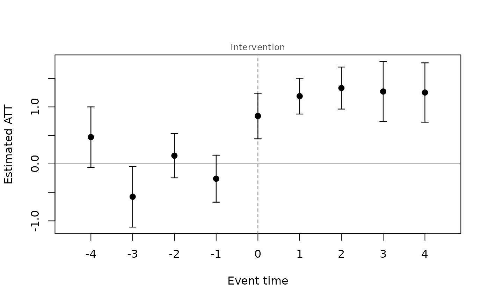
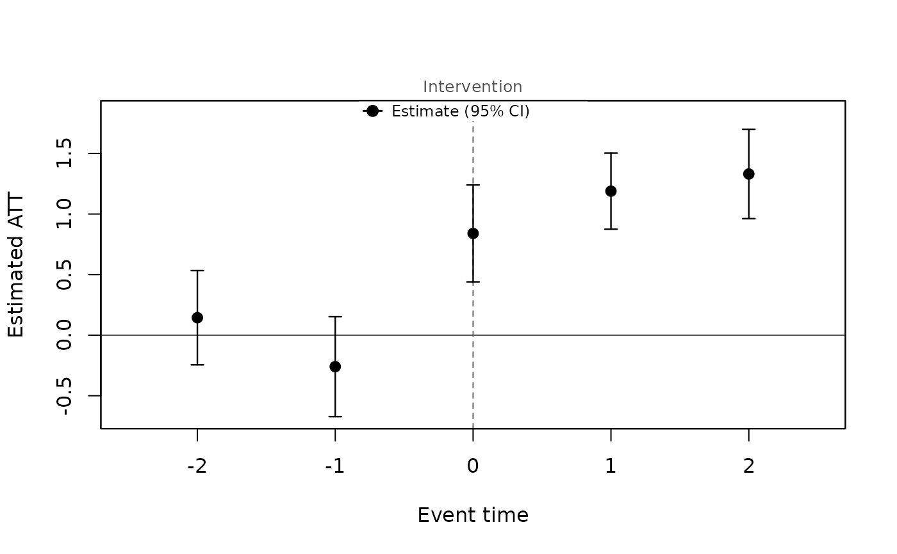
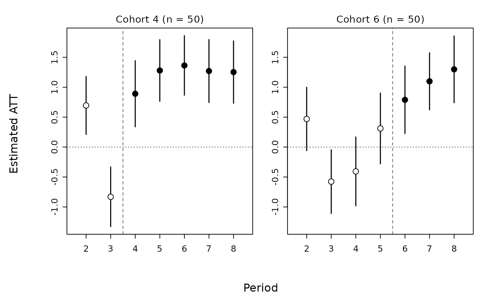
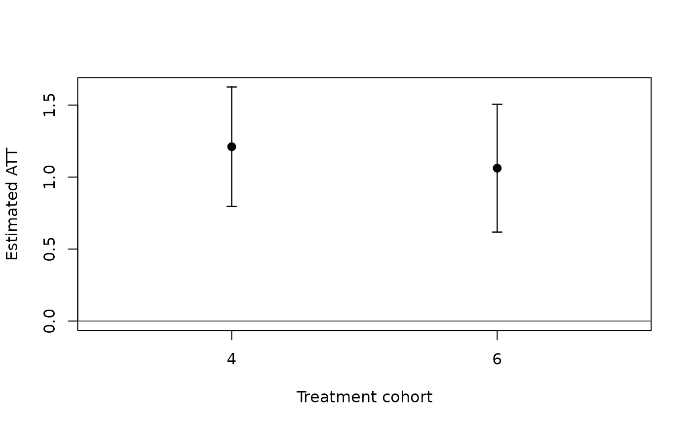
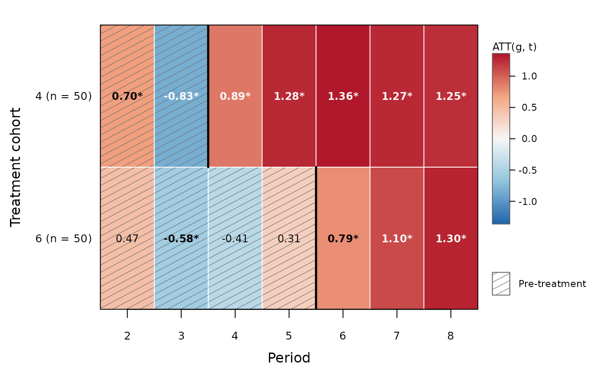
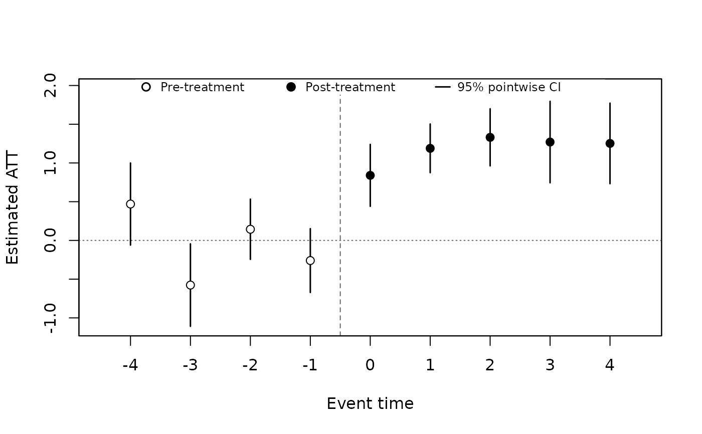
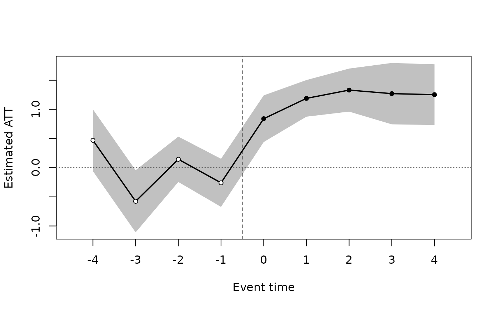
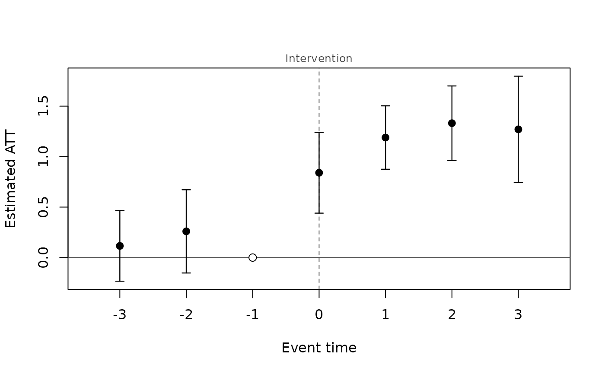

Plots the dynamic aggregation of attgt() (ATT(e) by event time), the
cohort or calendar aggregation, or the group-time effects ATT(g, t)
themselves. The default style ("classic") draws filled points with
capped pointwise confidence intervals, a solid line at zero and, for
event time, a dashed line at treatment onset labelled "Intervention".
When the fit has uniform confidence bands (cband = TRUE), they are
drawn as light grey bars behind the pointwise intervals.
Usage
# S3 method for class 'panglm_attgt'
plot(
x,
type = c("dynamic", "group", "calendar", "gt", "heatmap"),
min_e = -Inf,
max_e = Inf,
ncol = NULL,
xlab = NULL,
ylab = "Estimated ATT",
main = NULL,
ylim = NULL,
legend = FALSE,
style = c("classic", "points", "line"),
ref = -1,
onset = NULL,
onset_label = NA,
caps = NULL,
cells = FALSE,
digits = 2,
...
)
# S3 method for class 'summary.panglm_attgt'
plot(
x,
type = NULL,
min_e = -Inf,
max_e = Inf,
xlab = NULL,
ylab = "Estimated ATT",
main = NULL,
ylim = NULL,
legend = FALSE,
style = c("classic", "points", "line"),
ref = -1,
onset = NULL,
onset_label = NA,
caps = NULL,
...
)Arguments
- x
a
"panglm_attgt"fit fromattgt(), or its summary- type
what to plot (for a fit):
"dynamic"(event study),"group","calendar","gt"(the group-time effects, one panel per cohort) or"heatmap"(the group-time effects as a cohort by period heat map)- min_e, max_e
event window (event time for
"dynamic", calendar time for"gt"and"heatmap")- ncol
number of panel columns for
type = "gt"(default: about the square root of the number of cohorts)- xlab, ylab, main
axis labels and title
- ylim
y-axis limits; for the heat map, the limits of the colour scale (default: symmetric around zero)
- legend
logical: add a compact legend of the symbols (the heat map always has its colour bar)
- style
"classic"(default),"points"or"line"(see Styles); for the event-time, cohort and calendar plots- ref
event time of the reference period, marked when its estimate is exactly zero (see Styles);
NULLmarks none- onset
position of the dashed treatment-onset line on the event time axis:
NULLgives0forstyle = "classic"and-0.5(between the last pre-treatment and the first treated period) otherwise- onset_label
text written above the onset line; the default (
NA) is "Intervention" forstyle = "classic"and none otherwise,NULLsuppresses it- caps
logical: draw caps on the confidence-interval whiskers; the default (
NULL) draws them forstyle = "classic"only- cells
logical: print the estimates in the cells of the heat map
- digits
number of decimals of the printed estimates
- ...
passed to
summary.panglm_attgt()(balance_e,level) and then tographics::plot()
Value
the plotted summary, invisibly; for type = "gt" and
"heatmap", the plotted rows of the estimates of the fit (with a
logical column pre for the heat map)
Details
With type = "gt", one small panel per treatment cohort shows
ATT(g, t) against calendar time, with the cohort size in the panel
title, a dashed line at adoption and a common y axis (as did::ggdid()).
The uniform bands of a cband = TRUE fit are simultaneous over all
ATT(g, t).
With type = "heatmap", the ATT(g, t) are shown as a cohort (rows,
earliest adopters at the top) by calendar period (columns) heat map,
on a blue-white-red scale centred at zero with a colour bar.
Pre-treatment cells are hatched, a thick black edge marks the adoption
of each cohort and grey cells have no estimate. With cells = TRUE the
estimates are printed in the cells, in bold with a star when the
pointwise confidence interval excludes zero.
Styles
style = "classic" (the default) is the textbook dynamic
difference-in-differences figure: filled points with capped whiskers,
the reference period as an open circle at zero without a whisker, a
solid line at zero and a dashed vertical line at event time 0
labelled "Intervention" above the plot. style = "points" draws hollow
points before treatment and filled points after, an open diamond at the
reference period, uncapped intervals, a dotted zero line and the onset
line at -0.5, between the last pre-treatment and the first treated
period. style = "line" joins
the estimates by a line and shades the pointwise confidence intervals
(and, lighter, the uniform bands), with the onset line at -0.5. The
cohort panels of type = "gt" always use the "points" look.
The reference period is the event time ref when its estimate is
exactly zero, that is when it is omitted or normalized. With
base = "universal" in attgt() the effect at event time -1 is
normalized to zero and drawn as the reference. With the default
base = "varying" no period is omitted (each pre-treatment estimate is
a short difference), so no reference period is drawn.
See also
Other attgt methods:
summary.panglm_attgt()
Examples
set.seed(2)
d <- expand.grid(id = 1:150, t = 1:8)
d$first <- rep(c(4, 6, NA), each = 50)[d$id]
d$y <- rnorm(150)[d$id] + 0.2 * d$t +
ifelse(!is.na(d$first) & d$t >= d$first, 1, 0) + rnorm(nrow(d))
fit <- attgt(y ~ 1, d, index = c("id", "t"), treat = "first")
plot(fit)

plot(fit, min_e = -2, max_e = 2, legend = TRUE)

plot(fit, type = "gt")

plot(fit, type = "group")

plot(fit, type = "heatmap", cells = TRUE)

plot(fit, style = "points", legend = TRUE)

plot(fit, style = "line")

# with a universal base period, event time -1 is the reference (zero)
fu <- attgt(y ~ 1, d, index = c("id", "t"), treat = "first", base = "universal")
plot(fu, min_e = -3, max_e = 3)
